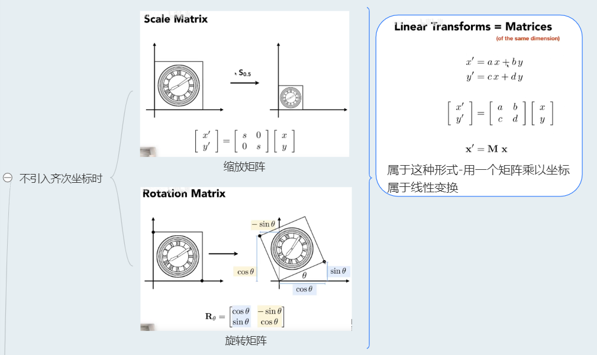

L03 Transformation
1 矩阵与变换
1.1 2D变换
通过线性代数的知识，我们知道空间的变换可以表示成基的变换，并且最小正交基可以组成单位矩阵。
也就是说一个矩阵代表着一个变换，对基的数值变化表现在矩阵的数字上。
如下图的可以表示线性代数中的 缩放变换矩阵，旋转变换矩阵。这两种矩阵都可以表示成图右边的这种，矩阵和向量相乘的形式，也就是线性组合形式，所以它们也被叫做是线性变换。
但是对于位移变换来说，它的原点改变了。而线性变换是 原点不会改变的变换（保加法和保数乘的性质），所以位移无法用线性变换表示。
这也就是我们引入齐次坐标的原因，因为这样我们可以解决位移带来的问题。在引入齐次坐标表示向量后，我们可以做到只用一个矩阵来表示2维运动。
因为向量因为带有平移不变性，所以齐次坐标中，二维向量的最后一个维度是0，这样可以让在齐次坐标中，向量在经过位移变换的计算后，还是它本身。

旋转缩放与平移组合到一起，组合成了仿射变换。仿射变换可以用齐次坐标表示下的矩阵来书写。

复杂的变换可以拆解成简单变换的组合，并且组合的顺序是先缩放，再旋转，后平移，拆解变换的时候就倒过来分析。
矩阵乘法没有交换律，所以我们有顺序的要求，从右到左应用变换。

1.2 3D变换（欧拉角/万向节锁/四元数）
三维的情况用齐次坐标表示，缩放，旋转，平移，这里的旋转我们先用欧拉角表示的旋转。


利用旋转矩阵 我们可以把 任意位置向量，沿一个单位旋转轴 进行旋转。
我们也可以将多个矩阵复合，比如先沿着x轴旋转，再沿着y轴旋转。但是这会很快导致一个问题——万向节死锁（Gimbal Lock）。
避免万向节死锁的真正解决方案是使用四元数(Quaternion)，它不仅更安全，而且计算会更有效率。
2 视图变换（Viewing Transformation）
2.1 摄像机/观察空间概述
我们可以这样来描述视图变换的任务：将虚拟世界中以(x,y,z)为坐标的物体变换到以一个个像素位置(x,y)来表示的屏幕坐标系之中(2维)，这确实是一个较为复杂的过程，但是整个过程可以被细分为如下几个步骤：
- 模型变换(modeling tranformation)：将虚拟世界中的物体调整至他们应该在的位置
- 摄像机变换(camera tranformation)：得到物体与摄像机的相对位置
- 投影变换(projection tranformation)：根据具体情况选择平行投影或是透视投影，将三维空间投影至标准二维平面(\([-1,1]^2\))之上
- 视口变换(viewport transformation)：将处于标准平面映射到屏幕分辨率范围之内，即\([-1,1]^2 \rightarrow [0,width] \times [0,height]\)
2.2 View/Camera(视图) Transformation
首先我们需要定义好Camera：
- 设置好相机的位置
- 设置好相机看向的方向，即look-at / gaze direction
- 设置一个up-direction
我们知道，当相机和物体没有进行相对运动时，不论怎么移动二者，我们看到的结果是一样的。因此我们将相机始从原来位置移动到原点位置，使得其gaze direction看向-z方向，up-direction是y正半轴。
其基本思想是：
- 进行平移，将e点移到原点
- 旋转g到-z方向上
- 旋转t到+y方向上
- 旋转 \(g \times t\) 得到的向量到+x方向上
我们知道旋转矩阵的逆矩阵 是这个旋转矩阵的转置矩阵，根据这一性质巧妙的求出了变换矩阵。
2.3 Projection Transformation
- Orthographic projection (正交投影）：多用于工程制图
- Perspective projection（透视投影）：符合人眼的成像，会产生近大远小的效果


道理我都懂，可是为什么鸽子这么大？
正交投影和透视投影本质的区别就是：是否有近大远小的效果。
正交投影的思想：
- 我们设置camera于原点，看向-Z方向，向上是Y轴
- 然后我们舍弃Z轴也就是让所有物体都Z都等于0
- 将其挤压到【-1，1】× 【-1，1】这么一个正方形内

透视投影的思想：
- 将Frustum给挤压成一个长方体，也就是将远平面压的和近平面一个大小
- 做一次正交投影，将长方体的中心移到原点并将其压缩成-1，1的正方体
从相似三角形可以得到边与边之间的关系：


接下来我们求第三行，需要记住两点：
- 近平面上的任意一点都不会因变换而改变
- 远平面上的任意一点的Z值都不会因变化而改变


课后思考
在将frustum挤压为Cuboid的过程中，远平面和近平面的Z值均不会发生变化，那么在这之间的点的Z值是否会发生变化？如果会，是往那个平面推进了？

答案：近平面和远平面之间的点在挤压后会离远平面更近，远离近平面。
TIPS：注意camera在原点是看向-z方向的